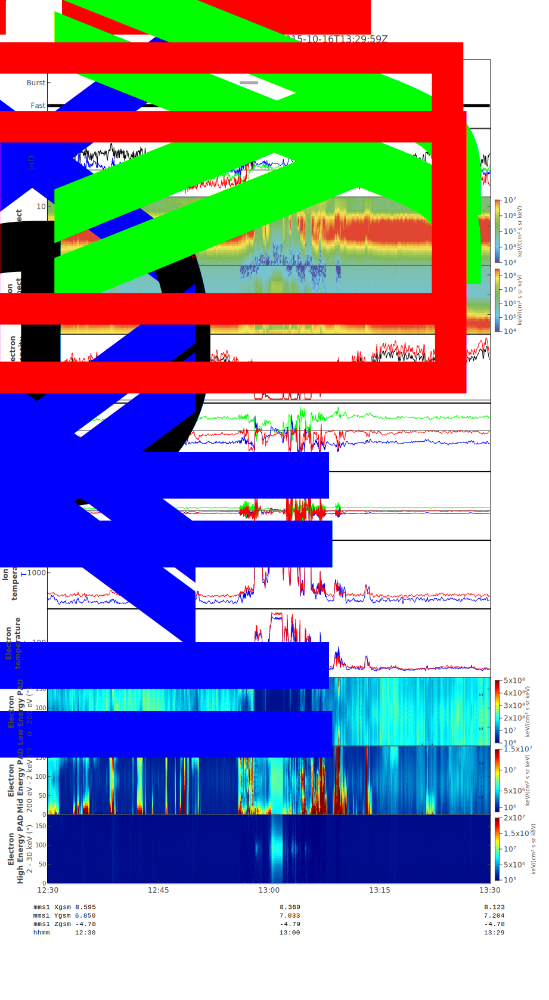
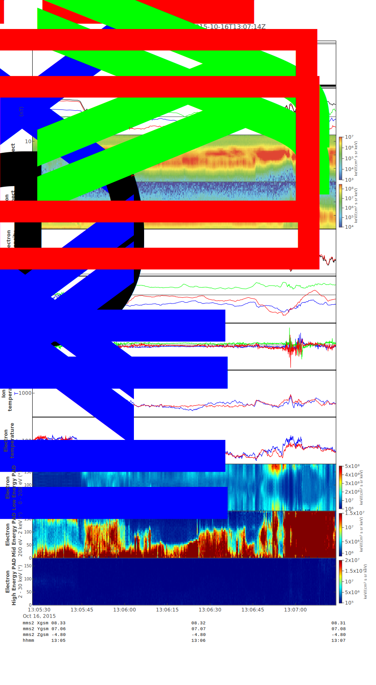
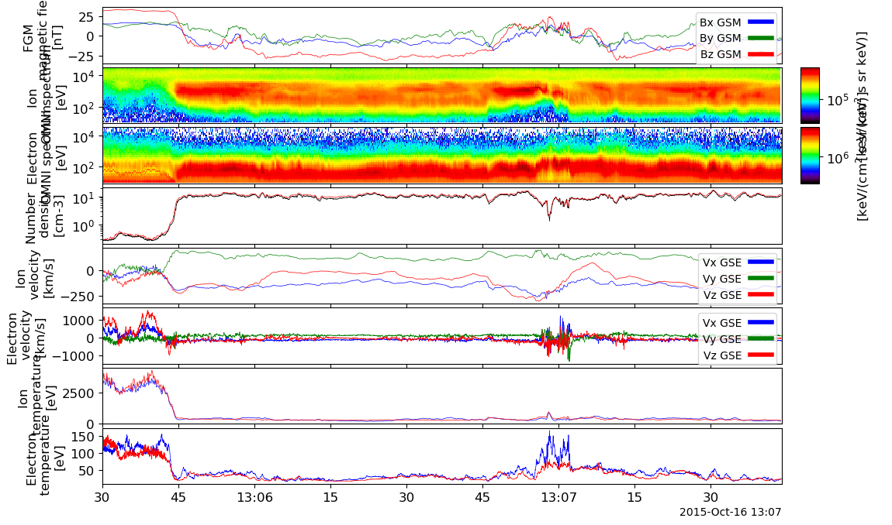
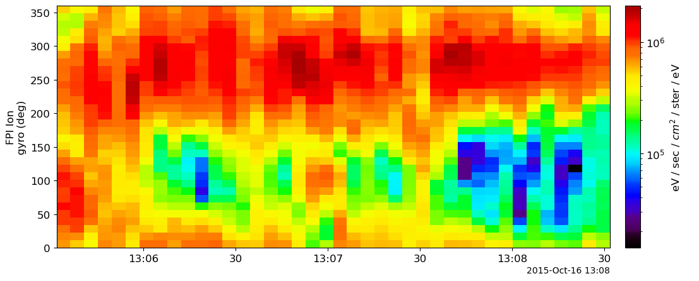
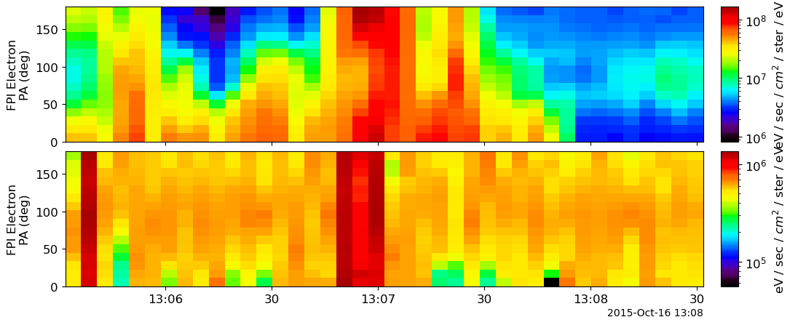

Code
import pyspedas
from pyspedas import tcopy
from pyspedas.mms.particles.mms_part_getspec import mms_part_getspec
from pytplot import tplot, store_data, optionsFast Plasma Investigation
- For an event/spacecraft of your choice from MMS (other than MMS3 for the event in the above crib provided), introduce L2 FPI ion and electron moments and eflux energy spectrograms. Explain what the region of space is (why the data are consistent with that region). Magnetic field is always useful to include. Use a geophysical coordinate system (GSM, GSE a al., Science 2016 and Torbert et al., Science 2018.
- Using standard tools in mms_part_products, obtain gyro-velocity spectra of high-energy (5-10keV or 20-30keV) ions. Can you tell the gradient of those ions at the magnetopause, or the plasma sheet boundary layer from their duskward anisotropy?
- Also using mms_part_products, obtain pitch angle spectra from FPI for low (100-1000eV) and high (10-20keV) electrons in a region surrounding magnetic reconnection (1-2min before and after). Can you tell where the anisotropy reverses from towards to away from the RX region? How do you interpret this reversal?
We choose MMS for this question. And the data is from 2015-10-16 13:00-14:00UT.
Its locations plot together with related quicklook plots are shown below copied from (Burch et al. 2016) paper.


FPI visualizations are shown below obtained from MMS/FPI Website.


import pyspedas
from pyspedas import tcopy
from pyspedas.mms.particles.mms_part_getspec import mms_part_getspec
from pytplot import tplot, store_data, optionstrangeOfInterest = ["2015-10-16T13:05:30", "2015-10-16T13:08:30"]
mms_num = "2"
fpi_data_rate = "brst"mms_sc = "mms" + mms_num
mms_sc_f = mms_sc + "_"
fpi_dr_f = "_" + fpi_data_ratepyspedas.mms.fgm(trange=trangeOfInterest, probe=mms_num, time_clip=True)
pyspedas.mms.fpi(
trange=trangeOfInterest, probe=mms_num, time_clip=True, data_rate=fpi_data_rate
)fgm_tvar = "fgm_b_gsm_srvy_l2_bvec"
fgm_tvar_f = mms_sc_f + fgm_tvar
mag_panel = fgm_tvar_f
options(mag_panel, "ytitle", "FGM \n magnetic field")i_energy_spectr_tvar = "dis_energyspectr_omni"
e_energy_spectr_tvar = "des_energyspectr_omni"
i_spectr_panel = mms_sc_f + i_energy_spectr_tvar + fpi_dr_f
e_spectr_panel = mms_sc_f + e_energy_spectr_tvar + fpi_dr_f
options(i_spectr_panel, "ytitle", "Ion \n OMNI spectrum")
options(e_spectr_panel, "ytitle", "Electron \n OMNI spectrum")numberdensity_tvars = ["des_numberdensity", "dis_numberdensity"]
numberdensity_tvars_f = [mms_sc_f + tvar + fpi_dr_f for tvar in numberdensity_tvars]
numberdensity_panel = mms_sc_f + "numberdensity" + fpi_dr_f
store_data(numberdensity_panel, numberdensity_tvars_f)
options(numberdensity_panel, "Color", ["black", "red"])
options(numberdensity_panel, "ytitle", "Number \n density")i_velocity_tvar = "dis_bulkv_gse"
e_velocity_tvar = "des_bulkv_gse"
i_velocity_panel = mms_sc_f + i_velocity_tvar + fpi_dr_f
e_velocity_panel = mms_sc_f + e_velocity_tvar + fpi_dr_f
options(i_velocity_panel, "ytitle", "Ion \n velocity")
options(e_velocity_panel, "ytitle", "Electron \n velocity")i_temperature_tvars = ["dis_temppara", "dis_tempperp"]
e_temperature_tvars = ["des_temppara", "des_tempperp"]
i_temperature_tvars_f0 = [mms_sc_f + tvar + fpi_dr_f for tvar in i_temperature_tvars]
e_temperature_tvars_f0 = [mms_sc_f + tvar + fpi_dr_f for tvar in e_temperature_tvars]
i_temperature_panel = mms_sc_f + "dis_temp" + fpi_dr_f
e_temperature_panel = mms_sc_f + "des_temp" + fpi_dr_f
store_data(i_temperature_panel, i_temperature_tvars_f0)
options(i_temperature_panel, "Color", ["blue", "red"])
options(i_temperature_panel, "ytitle", "Ion \n temperature")
store_data(e_temperature_panel, e_temperature_tvars_f0)
options(e_temperature_panel, "Color", ["blue", "red"])
options(e_temperature_panel, "ytitle", "Electron \n temperature")tvars2plot = [
mag_panel,
i_spectr_panel,
e_spectr_panel,
numberdensity_panel,
i_velocity_panel,
e_velocity_panel,
i_temperature_panel,
e_temperature_panel,
]
tplot(tvars2plot)
We can see that the spacecraft is crossing the magnetopause from the magnetosphere to the magnetosheath. The magnetic field is changing violently during the crossing. The density is increasing and the temperature is decreasing.
Using standard tools in mms_part_products, obtain gyro-velocity spectra of high-energy (5-10keV or 20-30keV) ions. Can you tell the gradient of those ions at the magnetopause, or the plasma sheet boundary layer from their duskward anisotropy?
We can see from the figure below that the ions have aniostropy in the gryo-velocity spectra after the spacecraft crosses the magnetopause. The ion becomes more isotropic in the reconnecting region and in the magnetosphere.
Note: burst mode data is super slow to calculate the spectra. So we use fast mode data instead.
fpi_data_rate = "fast"
low_energy_range = [100, 1e3]
high_energy_range = [1e4, 3e4]tvars2plot = mms_part_getspec(
trange=trangeOfInterest,
probe=mms_num,
species="i",
data_rate=fpi_data_rate,
units="eflux",
output="gyro",
pitch=[45.0, 135.0],
energy=high_energy_range,
)tplot(tvars2plot)
Also using mms_part_products, obtain pitch angle spectra from FPI for low (100-1000eV) and high (10-20keV) electrons in a region surrounding magnetic reconnection (1-2min before and after). Can you tell where the anisotropy reverses from towards to away from the RX region? How do you interpret this reversal?
Particles that travel parallel and antiparallel to the magnetic field are respectively located near the bottom and the top of the pitch angle spectrum.
Although the particles travelling antiparallel to the magnetic field increase after the spacecraft crosses the magnetopause, the particles travelling parallel to the magnetic field still dominate the pitch angle spectrum for low energy electrons.
For the high energy electrons, this is no clear anisotropy in the pitch angle spectrum, which may be due to the use of fast mode data instead of burst mode data.
species = "e"
fpi_data_rate = "fast"
output="pa"
low_energy_range = [100, 1e3]
high_energy_range = [1e4, 2e4]temp_tvar = mms_part_getspec(
trange=trangeOfInterest,
probe=mms_num,
species=species,
data_rate=fpi_data_rate,
output=output,
energy=low_energy_range
)
tcopy(temp_tvar[0], "low_energy_electron_pa")
temp_tvar = mms_part_getspec(
trange=trangeOfInterest,
probe=mms_num,
species=species,
data_rate=fpi_data_rate,
output=output,
energy=high_energy_range
)
tcopy(temp_tvar[0], "high_energy_electron_pa")tplot(["low_energy_electron_pa", "high_energy_electron_pa"])